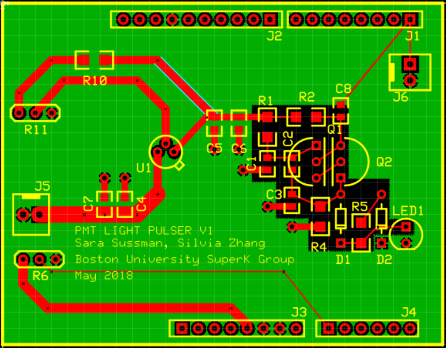

Hi, I'm Sara and I like to study fundamental physics. I develop hardware and software that help me do this. I'm a first year Ph.D. student at Princeton. Before that I worked on the Super-Kamiokande and Hyper-Kamiokande collaborations at Boston University.
I'm still developing this webpage, so stay tuned. I plan to upload some of my projects and some physics resources you might like.